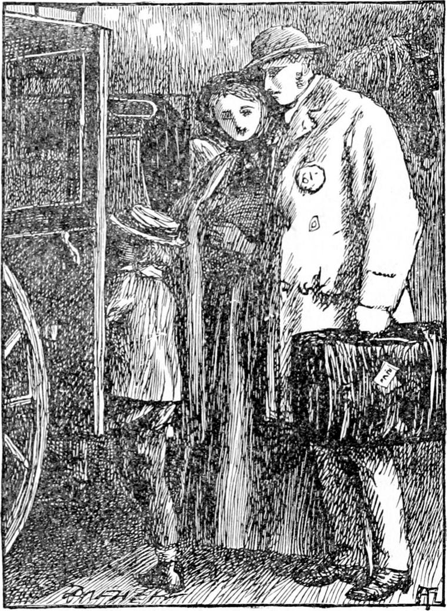
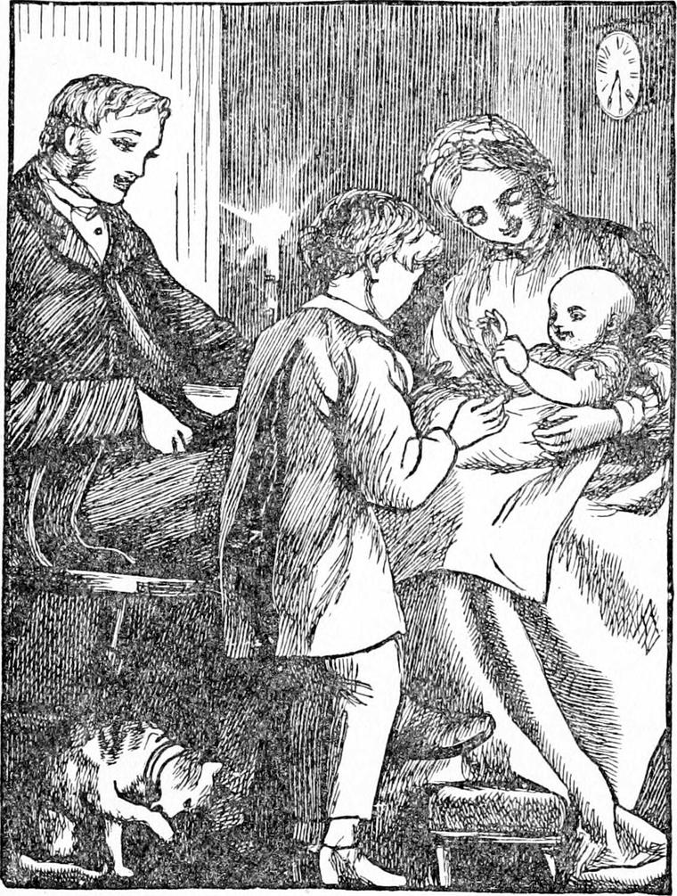

IT WAS late in the afternoon when Diamond and his mother and the baby reached London. I was so full of Diamond that I forgot to tell you a baby had arrived in the meantime. His father was waiting for them with his own cab, but they had not told Diamond who the horse was; for his father wanted to enjoy the pleasure of his surprise when he found it out. He got in with his mother without looking at the horse, and his father having put up Diamond's carpet-bag and his mother's little trunk, got upon the box himself and drove off; and Diamond was quite proud of riding home in his father's own carriage. But when he got to the mews, he could not help being a little dismayed at first; and if he had never been to the back of the north wind, I am afraid he would have cried a little. But instead of that, he said to himself it was a fine thing all the old furniture was there. And instead of helping his mother to be miserable at the change, he began to find out all the advantages of the place; for every place has some advantages, and they are always better worth knowing than the disadvantages. Certainly the weather was depressing, for a thick, dull, persistent rain was falling by the time they reached home. But happily the weather is very changeable; and besides, there was a good fire burning in the room, which their neighbour with the drunken husband had attended to for them; and the tea-things were put out, and the kettle was boiling on the fire. And with a good fire, and tea and bread and butter, things cannot be said to be miserable.

Diamond's father and mother were, notwithstanding, rather miserable, and Diamond began to feel a kind of darkness beginning to spread over his own mind. But the same moment he said to himself, “This will never do. I can't give in to this. I've been to the back of the north wind. Things go right there, and so I must try to get things to go right here. I've got to fight the miserable things. They shan't make me miserable if I can help it.” I do not mean that he thought these very words. They are perhaps too grown-up for him to have thought, but they represent the kind of thing that was in his heart and his head. And when heart and head go together, nothing can stand before them.
“What nice bread and butter this is!” said Diamond.

“I'm glad you like it, my dear” said his father. “I bought the butter myself at the little shop round the corner.”
“It's very nice, thank you, father. Oh, there's baby waking! I'll take him.”
“Sit still, Diamond,” said his mother. “Go on with your bread and butter. You're not strong enough to lift him yet.”
So she took the baby herself, and set him on her knee. Then Diamond began to amuse him, and went on till the little fellow was shrieking with laughter. For the baby's world was his mother's arms; and the drizzling rain, and the dreary mews, and even his father's troubled face could not touch him. What cared baby for the loss of a hundred situations? Yet neither father nor mother thought him hard-hearted because he crowed and laughed in the middle of their troubles. On the contrary, his crowing and laughing were infectious. His little heart was so full of merriment that it could not hold it all, and it ran over into theirs. Father and mother began to laugh too, and Diamond laughed till he had a fit of coughing which frightened his mother, and made them all stop. His father took the baby, and his mother put him to bed.
But it was indeed a change to them all, not only from Sandwich, but from their old place, instead of the great river where the huge barges with their mighty brown and yellow sails went tacking from side to side like little pleasure-skiffs, and where the long thin boats shot past with eight and sometimes twelve rowers, their windows now looked out upon a dirty paved yard. And there was no garden more for Diamond to run into when he pleased, with gay flowers about his feet, and solemn sun-filled trees over his head. Neither was there a wooden wall at the back of his bed with a hole in it for North Wind to come in at when she liked. Indeed, there was such a high wall, and there were so many houses about the mews, that North Wind seldom got into the place at all, except when something must be done, and she had a grand cleaning out like other housewives; while the partition at the head of Diamond's new bed only divided it from the room occupied by a cabman who drank too much beer, and came home chiefly to quarrel with his wife and pinch his children. It was dreadful to Diamond to hear the scolding and the crying. But it could not make him miserable, because he had been at the back of the north wind.
If my reader find it hard to believe that Diamond should be so good, he must remember that he had been to the back of the north wind. If he never knew a boy so good, did he ever know a boy that had been to the back of the north wind? It was not in the least strange of Diamond to behave as he did; on the contrary, it was thoroughly sensible of him.
We shall see how he got on.